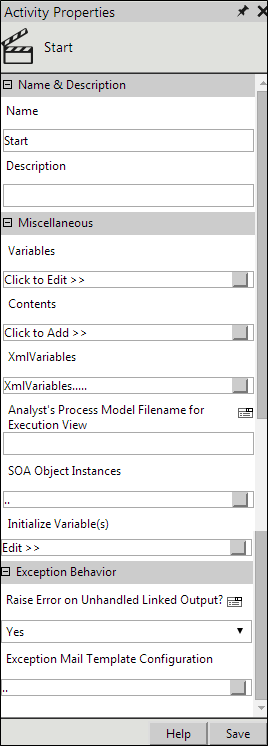
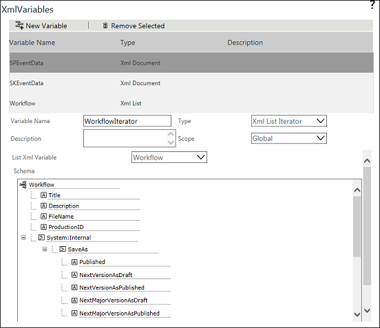

No
Creating an XML List Iterator Type XML Variable
XML List Iterator type XML variable is used to iterate through the list items (parent items) of a list and helps to retrieve/update data from a workflow.
To create an XML List Iterator type XML Variable
- Right-click the Start Activity, and select Activity Properties from the options. The Activity Properties appears.
 - Click the edit icon in the XMLVariables field. The XMLVariables screen appears, with the list of the existing XML variables.
- You have to create a XML List type XML variable before creating the XML List Iterator type XML variable. If you have already created XML List type XML variable, you can proceed to the following step. See Creating XML List type XML Variable to create XML List XML variable.
- Click New Variable to add a new variable.
- Enter a variable name in the Variable Name field.
- Select XML List Iterator from the Type drop-down list.
- Select a XML Variable from the List XML Variable drop-down list.
Note: If you need to loop through the grid items of an item while iterating through the list items, you need to select the respective XML List Iterator type XML variable.

- Click Save Variable. A message is displayed saying 'Variable Updated'.
- Close the window.